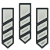
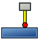
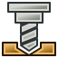

CAM Workbench/es

Introducción
El  Ambiente de Trabajo de Trayectoria se utiliza para generar instrucciones de máquina para máquinas CNC a partir de un modelo 3D de FreeCAD. Estas instrucciones generan objetos 3D reales en máquinas de tipo CNC tales como fresadoras, tornos, cortadoras láser o similares. Normalmente, las instrucciones utilizan un dialecto de código G. Aquí se ilustra un ejemplo general de simulación para la secuencia de trayectoria de una herramienta para torno CNC.
Ambiente de Trabajo de Trayectoria se utiliza para generar instrucciones de máquina para máquinas CNC a partir de un modelo 3D de FreeCAD. Estas instrucciones generan objetos 3D reales en máquinas de tipo CNC tales como fresadoras, tornos, cortadoras láser o similares. Normalmente, las instrucciones utilizan un dialecto de código G. Aquí se ilustra un ejemplo general de simulación para la secuencia de trayectoria de una herramienta para torno CNC.

El flujo de trabajo de FreeCAD CAM Workbench crea estas instrucciones de máquina de la siguiente manera:
- El objeto base es un modelo 3D generalmente creado con uno o más de los entornos de trabajo
 Part,
Part,  Pieza o
Pieza o  Boceto.
Boceto.
- Se crea un trabajo CAM en el entorno de trabajo CAM. Este contiene toda la información necesaria para generar el código G necesario para procesar el trabajo en una fresadora CNC. Hay material en bruto, la fresadora tiene un conjunto de herramientas determinado y sigue ciertos comandos que controlan la velocidad y los movimientos (generalmente código G).
- Las herramientas CAM se seleccionan según lo requieran las operaciones del trabajo.
- Las trayectorias de fresado se crean utilizando, por ejemplo, las operaciones Contorno y Vaciado. Estos objetos CAM utilizan el dialecto de código G interno de FreeCAD, independiente de la máquina CNC.
- Exportar el trabajo con un código G compatible con su máquina. Este paso se denomina «posprocesamiento»; existen diferentes posprocesadores disponibles.
Conceptos generales
El Entorno de Trabajo de Trayectoria genera código G que define las trayectorias necesarias para fresar el proyecto representado por el modelo 3D en la fresadora de destino en el dialecto de código G de FreeCAD para operaciones de trabajos CAM, que posteriormente se traduce al dialecto apropiado para el controlador CNC de destino seleccionando el posprocesador adecuado.
El código G se genera a partir de las directivas y operaciones contenidas en un trabajo CAM. El flujo de trabajo las enumera en el orden en que se ejecutarán. La lista se completa añadiendo operaciones CAM, mejoras de trayectoria, comandos suplementarios y modificaciones de trayectoria desde el menú CAM o los botones de la interfaz gráfica de usuario (GUI).
El entorno de trabajo CAM proporciona un gestor de herramientas (biblioteca, tabla de herramientas), así como herramientas de inspección y simulación de código G. Se conecta con el posprocesador y permite importar y exportar plantillas de trabajo.
El entorno de trabajo de trayectoria tiene dependencias externas, entre las que se incluyen:
- Las unidades del modelo 3D de FreeCAD se definen en Editar → Preferencias → General → Sistema de unidades predeterminado. La configuración del posprocesador define las unidades finales del código G.
- La ruta del archivo de macro y las tolerancias geométricas se definen en la pestaña Editar → Preferencias → CAM → Preferencias de trabajo.
- Los colores se definen en la pestaña Editar → Preferencias → CAM → Interfaz gráfica de usuario.
- Los parámetros de las etiquetas de sujeción se definen en la pestaña Editar → Preferencias → CAM → Diseños.
- La calidad del modelo 3D base cumple con los requisitos del entorno de trabajo CAM, superando la comprobación de geometría Part_CheckGeometry.
Limitaciones
Algunas limitaciones actuales que debe tener en cuenta son:
- La mayoría de las herramientas CAM no son herramientas 3D reales, sino solo 2.5D. Esto significa que toman una forma 2D fija y pueden cortarla hasta una profundidad determinada. Sin embargo, existen dos herramientas que generan trayectorias 3D reales: Vaciado 3D y Superficie 3D (que aún es una función experimental a fecha de noviembre de 2020).
{kind=link}
{kind=link}
- La mayor parte del entorno de trabajo CAM está diseñado para una fresadora/router CNC estándar de 3 ejes (xyz), pero las herramientas para torno están en desarrollo en la versión 0.19_pre.
- La mayoría de las operaciones en el entorno de trabajo CAM generarán trayectorias basadas únicamente en una fresa estándar, independientemente del tipo de herramienta asignado en el controlador de herramientas, con la excepción de las operaciones Grabar y Superficie 3D.
{kind=link}
- Las operaciones en el entorno de trabajo CAM no tienen en cuenta los mecanismos de sujeción utilizados para fijar el modelo a la máquina. Por lo tanto, revise y simule las trayectorias generadas antes de enviar el código a la máquina. Si es necesario, modele los mecanismos de sujeción en FreeCAD para inspeccionar mejor las trayectorias generadas. Busque posibles colisiones con abrazaderas u otros obstáculos a lo largo de las trayectorias.
Unidades
El manejo de unidades en CAM puede ser confuso. Hay varios puntos para entender:
- Las unidades base de FreeCAD para longitud y tiempo son mm y s respectivamente. La velocidad es así mm/s. Esto es lo que FreeCAD almacena internamente independientemente de cualquier otra cosa
- El esquema de unidad predeterminado usa las unidades predeterminadas. Si está utilizando el esquema predeterminado e ingresa una velocidad de avance sin una cadena de unidades, se ingresará como mm/s
- La mayoría de las máquinas CNC esperan una velocidad de avance en forma de mm/min o in/min. La mayoría de los procesadores posteriores convertirán automáticamente la unidad cuando generen gcode.
Esquemas:
- Cambiar el esquema en las preferencias modifica la cadena de unidades predeterminada para los campos de entrada. Si utiliza CAM y prefiere diseñar en unidades métricas, se recomienda encarecidamente usar el esquema "Métrico para piezas pequeñas y CNC". Si diseña usando unidades estadounidenses, tanto el esquema Imperial Decimal como el de Construcción en EEUU funcionarán.
- Cambiar su esquema de unidades preferido no afectará la salida, pero ayudará a evitar errores de entrada.
Salida:
- Generar la unidad correcta en la salida es responsabilidad del posprocesador y se realiza únicamente en ese momento.
- La unidad de salida de la máquina es completamente independiente del esquema de unidades seleccionado.
- Los posprocesadores generan salida métrica (G21), imperial (G20) o son configurables.
- Los posprocesadores configurables utilizan por defecto el sistema métrico (G21).
- Si desea que su posprocesador configurable genere código G imperial (G20), configure el argumento correspondiente en la configuración de salida de su trabajo (por ejemplo, `--inches` para LinuxCNC). Esto se puede guardar en una plantilla de trabajo y establecerla como plantilla predeterminada para que se aplique automáticamente a todos los trabajos futuros.
Inspección CAM:
- Si utiliza la herramienta Inspección CAM para ver el código G, lo verá en mm/s porque no se está siendo procesado.
Alturas y profundidades
Muchos de los comandos tienen diferentes alturas y profundidades:

Referencia visual para las propiedades de profundidad (configuración)
Comandos
Algunos comandos son experimentales y no están disponibles de forma predeterminada. Para habilitarlos, consulte CAM experimental.
Comandos del proyecto
- Nuevo trabajo: Crea un nuevo trabajo CNC.
{kind=link}
- Posprocesado: Exporta un proyecto a código G.
{kind=link}
- Verificación de cordura: Comprueba el trabajo seleccionado en busca de valores faltantes.
{kind=link}
- Plantilla de exportación: Exporta el trabajo actual como una plantilla.
{kind=link}
Comandos de la herramienta
- Inspeccionar la trayectoria de la herramienta: Muestra el código G para la comprobación.
{kind=link}
- Simulador CAM heredado: Muestra la operación de fresado cómo se realiza en la máquina.
{kind=link}
- Simulador CAM: Habilita el nuevo y mejorado simulador CAM. introduced in 1.0
{kind=link}
- Finalizar selección del bucle: Completa un bucle a partir de dos bordes seleccionados.
{kind=link}
- Operación de alternancia: Activa o desactiva una operación de ruta.
{kind=link}
 Gestor de bibliotecas ToolBit: Abre un editor para administrar las bibliotecas de ToolBit.
Gestor de bibliotecas ToolBit: Abre un editor para administrar las bibliotecas de ToolBit.

Agregar broca…: Abre el selector de brocas.
{kind=link}
Operaciones básicas
- Perfil: Crea una operación de perfil de todo el modelo, o de una o más caras o aristas seleccionadas.
{kind=link}
- Forma de Vaciado: Crea una operación de vaciado a partir de uno o más bolsillos seleccionados.
{kind=link}
- Mecanizado de cara: Crea una trayectoria superficial.
{kind=link}
- Helix: Crea una trayectoria helicoidal.
{kind=link}
- Adaptivo: Crea una operación de limpieza y perfilado adaptativa.
{kind=link}
- Ranura: Crea una operación de ranurado a partir de características seleccionadas o puntos personalizados.
{kind=link}
- Perforado: Ejecuta un ciclo de perforado.
{kind=link}
- Grabado: Crea una trayectoria de grabado.
- Desbarbado: Crea una ruta de desbarbado.
{kind=link}
- Grabado en V: Crea una ruta de grabado utilizando una forma de herramienta V.
{kind=link}
Operaciones 3D
- Vaciado 3D: Crea una trayectoria para un vaciado 3D.
 Superficie 3D: Crea una trayectoria para una superficie 3D
Superficie 3D: Crea una trayectoria para una superficie 3D
- Línea de agua: Crea una ruta de línea de agua para una superficie 3D. Experimental.
{kind=link}
Enmascarado de trayectoria
 Mapa de ejes: Reasigna un eje a otro.
Mapa de ejes: Reasigna un eje a otro.
 Límite: Agrega una modificación de contorno a una ruta seleccionada.
Límite: Agrega una modificación de contorno a una ruta seleccionada.
 Enmascarado hueso de perro: Agrega una modificación de enmascarado hueso de perro a la trayectoria seleccionada.
Enmascarado hueso de perro: Agrega una modificación de enmascarado hueso de perro a la trayectoria seleccionada.
 Enmascarado Arrastre de cuchilla: Agrega una modificación de enmascarado arrastre de cuchilla a la trayectoria seleccionada.
Enmascarado Arrastre de cuchilla: Agrega una modificación de enmascarado arrastre de cuchilla a la trayectoria seleccionada.
 Lead In Dressup: Agrega un punto de entrada y / o salida a una ruta seleccionada
Lead In Dressup: Agrega un punto de entrada y / o salida a una ruta seleccionada
 Enmascarado entrada en rampa: Agrega una modificación de enmascarado entrada en rampa a la trayectoria seleccionada.
Enmascarado entrada en rampa: Agrega una modificación de enmascarado entrada en rampa a la trayectoria seleccionada.
 Tag Dressup: Agrega una modificación de tarjeta de espera a una ruta seleccionada
Tag Dressup: Agrega una modificación de tarjeta de espera a una ruta seleccionada
 Corrección de profundidad Z: Corrige la profundidad Z usando el mapa de sonda.
Corrección de profundidad Z: Corrige la profundidad Z usando el mapa de sonda.
Comandos parciales
- Comentar: Inserta un comentario en el código G de una trayectoria
{kind=link}
- Detener: Inserta un paro total de la maquina.
{kind=link}
- Personalizar: Inserta código G personalizado.
{kind=link}

Sonda: Crea una cuadrícula de sondeo a partir de un stock de trabajo.
{kind=link}
- Código G de un forma: Crea un objecto trayectoria a partir de un objecto parte seleccionado.
{kind=link}
Modificación de trayectoria
- Copiar: Crea una copia parametrica de un objecto trayectoria seleccionado
{kind=link}
- Matriz: Crea un arreglo duplicando una trayectoria seleccionada
{kind=link}
- Copia simple: Crea una copia no paramétrica de un objecto trayectoria seleccionado.
{kind=link}
Operaciones Especializadas
- Fresado de roscas: Crea una operación de fresado de roscas CAM a partir de las características de un objeto base. Experimental.
{kind=link}
Miscellaneous
- Área característica: Crea un área característica a partir de los objetos seleccionados.
{kind=link}
- Plano de trabajo de área característica: Crea un plano de trabajo de área característica.
{kind=link}
Comandos obsoletos
- Fixture: Cambia la posición del accesorio. No disponible en 1.1 and above.
{kind=link}
Arquitectura de broca
Gestiona herramientas, brocas y la biblioteca de herramientas. Basado en la arquitectura ToolBit.
- Herramientas CAM
- Forma de herramienta CAM
- Broca de herramienta CAM
- Biblioteca de brocas de herramienta CAM
- Controlador de herramientas CAM
Otros
- Preguntas frecuentes sobre CAM: El entorno de trabajo CAM comparte muchos conceptos con otros paquetes de software CAM, pero tiene sus propias particularidades. Si algo parece incorrecto, este es un buen punto de partida.
- Hoja de configuración de CAM: Puede usar una hoja de configuración para personalizar cómo se calculan los distintos valores de las propiedades de las operaciones.
- Personalización del posprocesador de CAM: Si tiene una máquina especial que no puede usar uno de los posprocesadores disponibles, es posible que deba escribir su propio posprocesador.
- Cuarto eje de CAM: Fresado experimental de cuatro ejes.
Preferencias

Preferencias: Preferencias disponibles para el entorno de trabajo CAM.
{kind=link}
Archivos de guión
Consulte CAM scripting.
Tutoriales
- Turorial de CAM para impacientes: un tutorial rápido para familiarizarse con CAM.
Víedos
- FreeCAD Path: Custom paths with Python - Part 1 - 5: Una lista de reproducción con una serie de 5 vídeos en inglés de sliptonic. Esta serie muestra cómo trabajar con CAM Workbench.
- FreeCAD CAM Path Workbench: Una lista de reproducción con una serie de 7 vídeos en inglés de CAD CAM Lessons.
- FreeCAD CAM CNC: Una lista de reproducción con una serie de 8 vídeos en inglés de CAD CAM Lessons.
- Consulte también la sección Fabricación asistida por ordenador (CAM) de la página wiki Vídeo tutoriales.
Hoja de ruta
- CAM Development Roadmap: Lea esto si es desarrollador y desea contribuir a CAM.
- Project Commands: New Job, Post Process, Sanity Check, Export Template
- Tool Commands: Inspect Toolpath, Legacy CAM Simulator, CAM Simulator, Finish Selecting Loop, Toggle Operation, ToolBit Library Manager, Add toolbit…
- Basic Operations: Profile, Pocket Shape, Face, Helix, Adaptive, Slot, Drilling, Tapping, Engrave, Deburr, Vcarve
- 3D Operations: 3D Pocket, 3D Surface, Waterline
- CAM Dressup: Array, Axis Map, Boundary, Dogbone, Drag Knife, Lead In/Out, Ramp Entry, Tag, Z Depth Correction
- Supplemental Commands: Comment, Stop, Custom, Probe, Path From Shape TC
- CAM Modification: Copy oOperation, Array, Simple Copy
- Specialty Operations: Thread Milling
- Miscellaneous: Area, Area Workplane
- ToolBit architecture: Tools, ToolShape, ToolBit, ToolBit Library, ToolController
- Additional: Preferences, Scripting
- Getting started
- Installation: Download, Windows, Linux, Mac, Additional components, Docker, AppImage, Ubuntu Snap
- Basics: About FreeCAD, Interface, Mouse navigation, Selection methods, Object name, Preferences, Workbenches, Document structure, Properties, Help FreeCAD, Donate
- Help: Tutorials, Video tutorials
- Workbenches: Std Base, Assembly, BIM, CAM, Draft, FEM, Inspection, Material, Mesh, OpenSCAD, Part, PartDesign, Points, Reverse Engineering, Robot, Sketcher, Spreadsheet, Surface, TechDraw, Test Framework
- Hubs: User hub, Power users hub, Developer hub